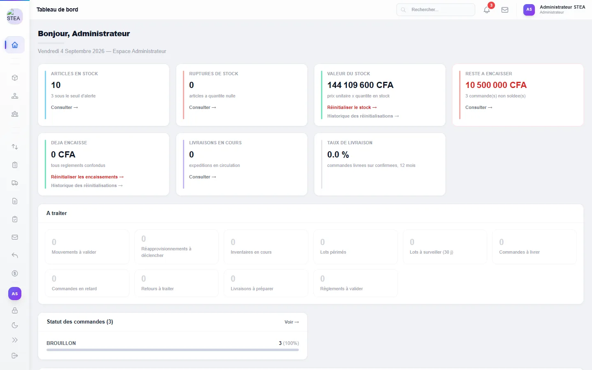
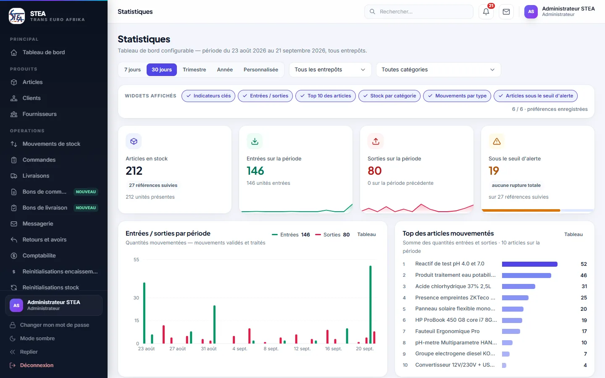
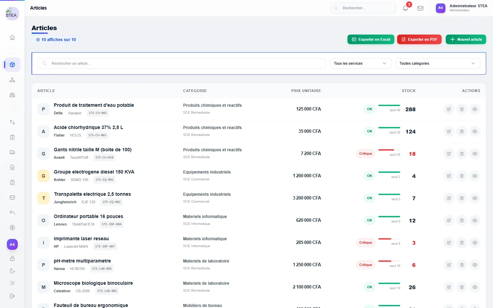
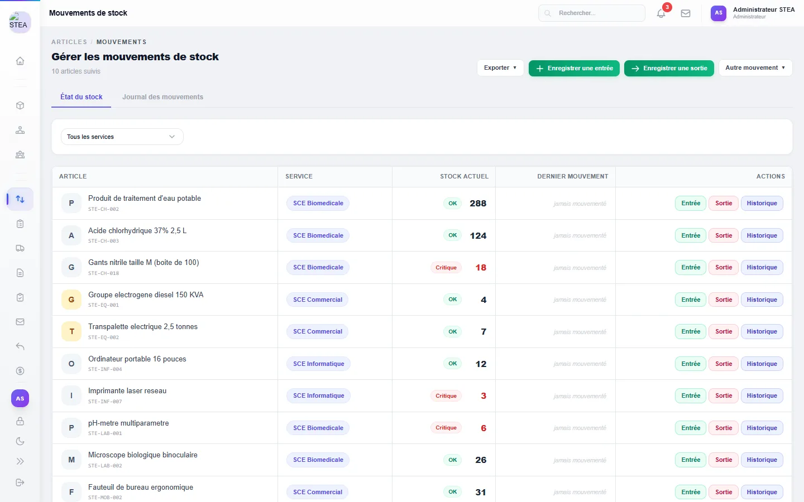
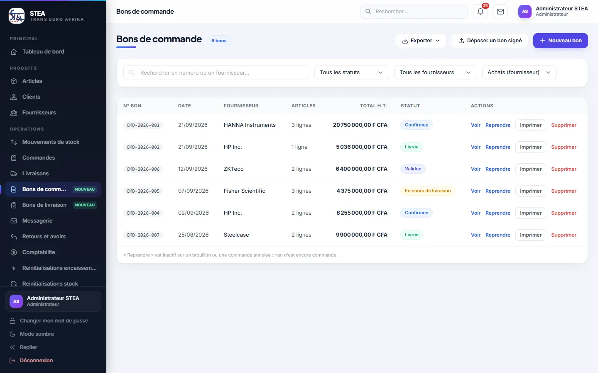
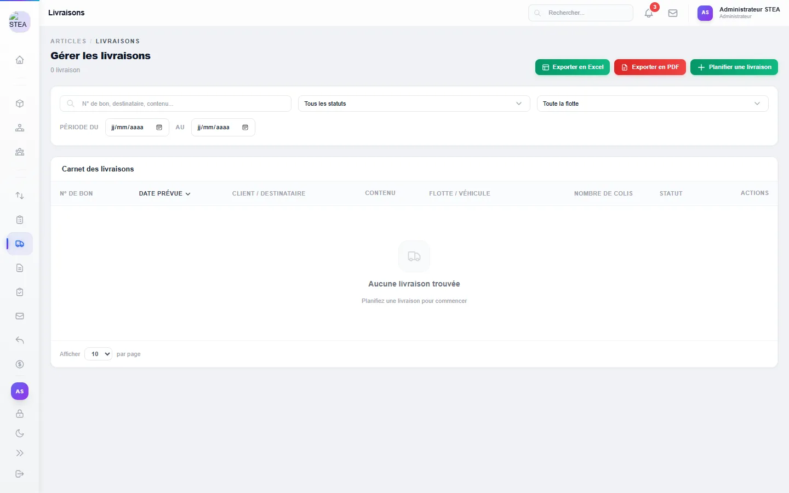
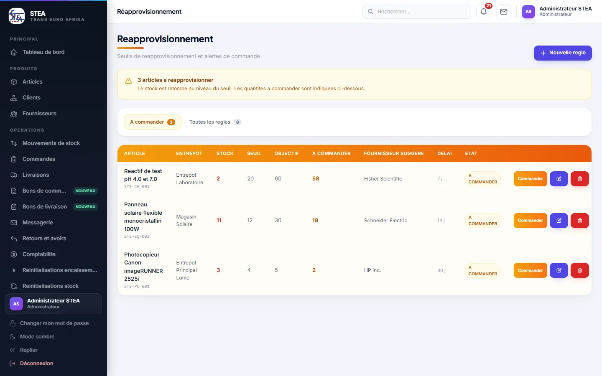
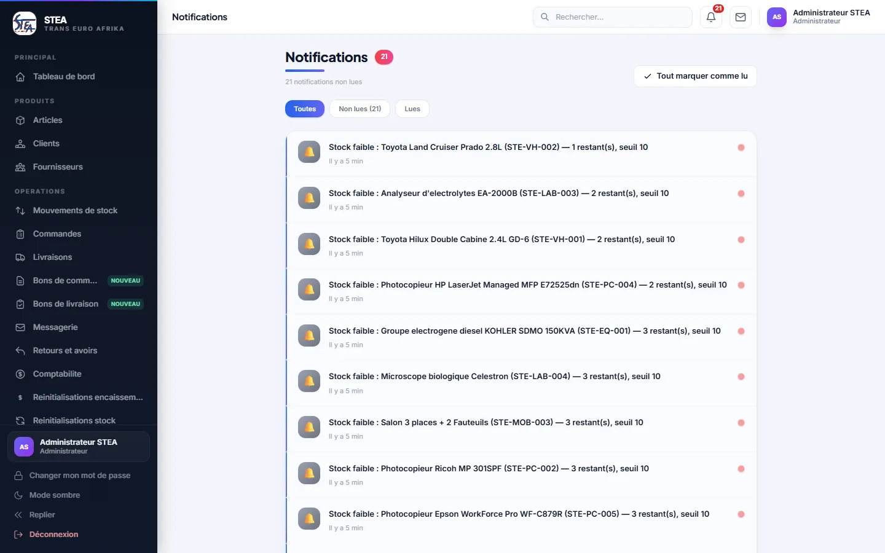

Un stock qu’on peut croire
Plusieurs entrepôts, des lots et des numéros de série : chaque quantité affichée doit correspondre à la réalité.
Étude de cas · projet phare
Comment j’ai conçu, développé et déployé, de bout en bout, une application de gestion logistique et de suivi des stocks aujourd’hui utilisée par STEA Trans Euro Afrika SARL, à Lomé.
01 · Le défi
STEA Trans Euro Afrika gère plusieurs entrepôts, des achats, des livraisons et des retours. Sans outil central, ce type d’information se disperse : l’état réel du stock devient incertain et les ruptures se découvrent trop tard.
L’application devait donc tenir un stock fiable sur plusieurs entrepôts, couvrir tout le cycle achat → livraison → retour, alerter avant la rupture et rester simple à installer sur les postes de l’entreprise.
Plusieurs entrepôts, des lots et des numéros de série : chaque quantité affichée doit correspondre à la réalité.
Commandes, livraisons, retours : les documents s’enchaînent sans ressaisie.
Chaque métier voit ce qui le concerne et n’agit que dans son périmètre.
02 · Ma réponse
J’ai séparé nettement les responsabilités : un serveur qui porte les règles métier et la sécurité, une interface qui présente et guide, et une application de bureau qui embarque cette interface et se met à jour toute seule.
Electron et React : un installeur Windows, et les mises à jour arrivent toutes seules au lancement.
Spring Boot et MySQL : une API REST qui porte les règles métier, l’authentification et les droits par rôle.
03 · Sécurité et qualité
Chaque règle de droits existe deux fois : dans l’interface, pour ne montrer que ce qui est permis, et dans le serveur, qui refuse le reste. Huit rôles se partagent l’application, dont trois en consultation seule.
04 · Résultats
La première version a été installée le 12 août 2026. Depuis, 29 versions ont été livrées par mise à jour automatique, sans jamais réinstaller un poste.
Exemple d’évolution demandée par l’entreprise : trois profils en consultation seule, limités à leur service. Maquette le matin, validée dans la journée, livrée le jour même.








05 · Ce que j’ai appris
Mettre à jour un outil utilisé tous les jours demande de la méthode. J’ai écrit ma procédure et je la suis à chaque fois, plutôt que d’improviser.
Masquer un bouton ne protège rien : les droits se vérifient côté serveur, l’interface ne fait que refléter ce qui est permis.
Avant de dire « c’est en ligne », je rejoue la fonctionnalité sur une instance de test. Une démonstration vaut mieux qu’une promesse.